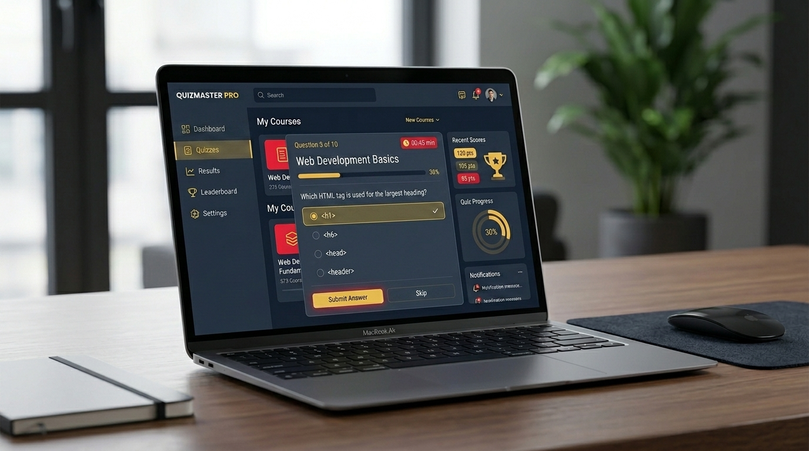
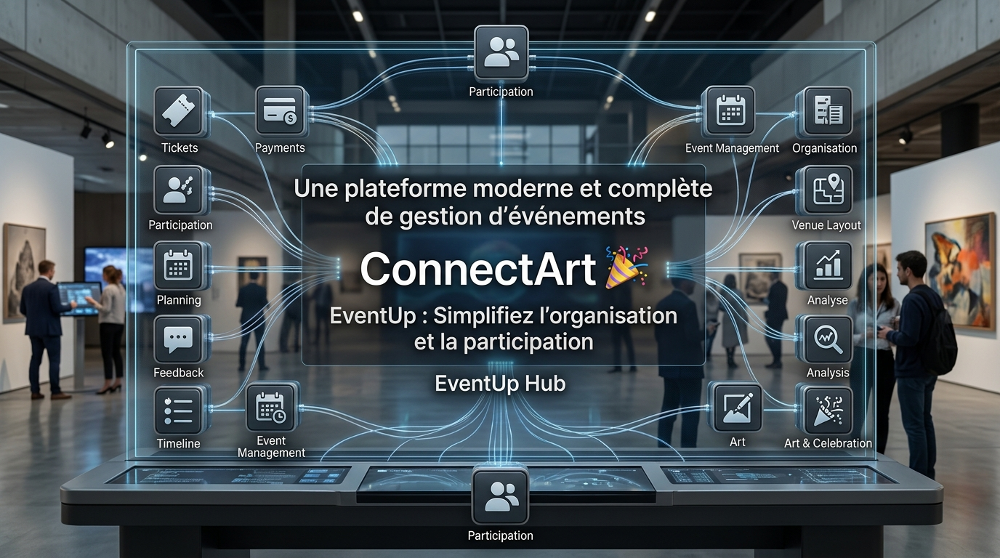
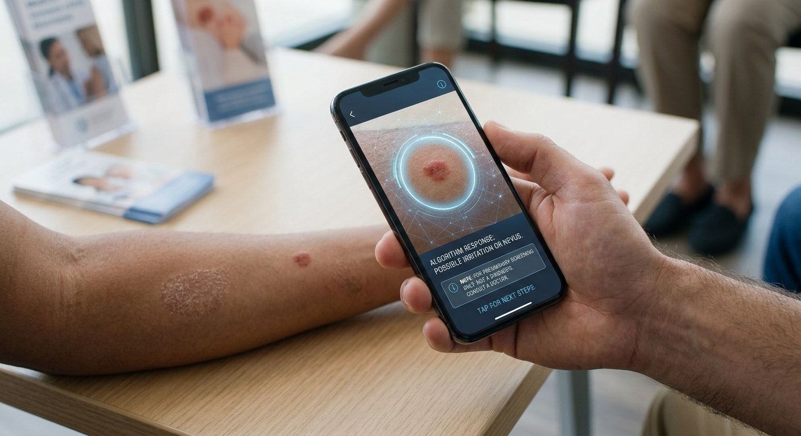
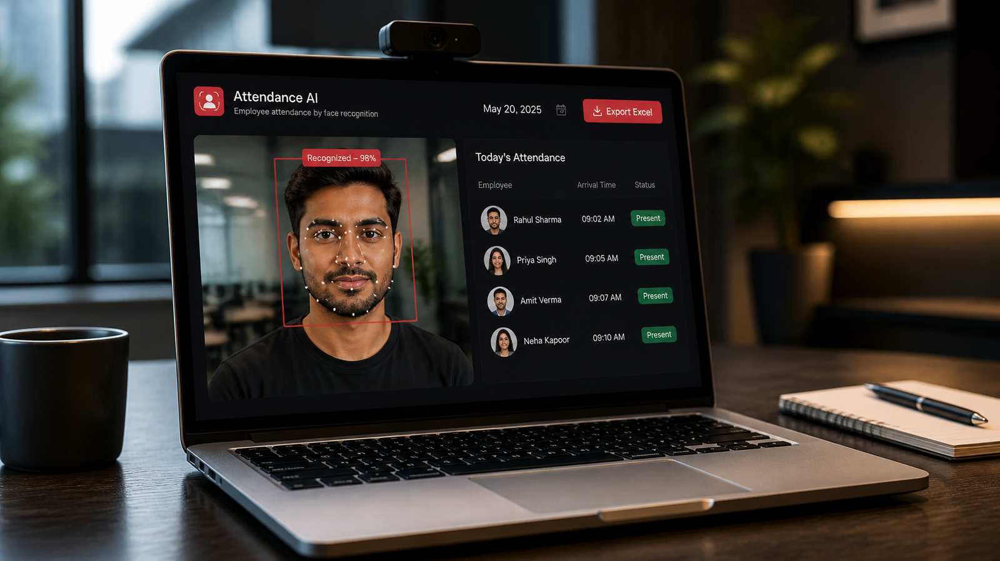
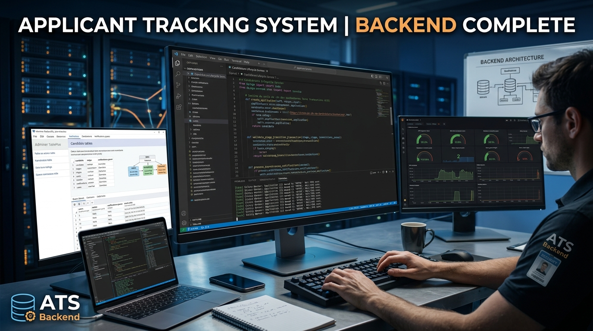

Bonjour, je suis
Bouthaina Khammesi
Je construis des applications web intelligentes, évolutives et esthétiques. Actuellement en immersion dans le monde de l'IA et de l'apprentissage automatique.
À la recherche d'un stage PFE 2027 en IA, développement full-stack et DevOps.
Télécharger CVÀ PROPOS DE MOI
Ma mission est de coder, créer et innover.
Je construis des systèmes intelligents qui résolvent des problèmes réels. Mon parcours en informatique est motivé par une fascination pour le potentiel de l'IA, mais je crois qu'un algorithme n'est aussi puissant que par l'application qui le délivre.
C'est pourquoi je suis aussi très compétente en développement full-stack. Je suis spécialisée dans la création de solutions robustes et complètes — d'Angular et React côté frontend, à Spring Boot, Laravel et Symfony côté backend, en passant par des projets combinant Python et MediaPipe pour l'IA appliquée. Je m'intéresse également aux pratiques DevOps et au déploiement, avec une expérience pratique de Docker, Kubernetes et des pipelines CI/CD avec Jenkins et GitHub Actions pour livrer des applications fiables du développement jusqu'à la production.
Je cherche actuellement des opportunités de stage stimulantes où je pourrai contribuer à des projets à l'intersection de l'IA et du développement full-stack, en aidant à construire la prochaine génération d'applications intelligentes.
Résolution de problèmes par la donnée
Exploiter des algorithmes et modèles de ML pour identifier des patterns et guider les décisions.
Développement collaboratif
S'épanouir dans des équipes agiles où une communication claire mène à de meilleurs produits.
Innovation pragmatique
Équilibrer des solutions créatives avec une implémentation pratique et efficace.
Adaptation rapide
Maîtriser rapidement de nouvelles technologies pour rester à la pointe du développement.
Automatisation & Déploiement
Simplifier le passage du code à la production grâce à Docker, Kubernetes et aux pipelines CI/CD (Jenkins, GitHub Actions).
EXPÉRIENCE PROFESSIONNELLE
FORMATION
PROJETS
Une sélection de mes travaux. Survolez n'importe quelle carte pour plus de détails.
APPLICATION WEB / SÉCURITÉ & AUTHENTIFICATION
Plateforme d'authentification unique (SSO)
Stage d'ingénieur (4ème année) · ST2i
Plateforme d'authentification unique permettant aux employés d'accéder à plusieurs applications de l'entreprise avec un seul compte. Intégration d'une application RH et d'une messagerie interne, gestion centralisée des utilisateurs, des rôles et des permissions, et sécurisation des accès avec Keycloak (OAuth 2.0 / OpenID Connect).
Spring Boot
Angular
- Keycloak
- OAuth 2.0 / OIDC
- TypeScript

APPLICATION WEB / PLATEFORME E-LEARNING
Plateforme E-Learning de Quiz
Conception et développement d'une plateforme web d'apprentissage en ligne permettant la consultation de cours, la réalisation de quiz interactifs avec évaluation en temps réel, et la délivrance automatique de certificats PDF personnalisés.
- Symfony
- PHP
- WebSocket
- MySQL

APPLICATION DESKTOP / GESTION D'ÉVÉNEMENTS
ConnectArt
Conception et développement d'une application desktop JavaFX de gestion d'événements avec interfaces administrateur et client. Le module administrateur permet la gestion complète des événements et catégories (CRUD), des statistiques dynamiques et l'export PDF, tandis que l'interface client offre la consultation en temps réel des événements et les inscriptions en ligne, avec géolocalisation intégrée.
- Java
- JavaFX
- MySQL
- Google Maps API
APPLICATION WEB / SANTÉ & IA
MediCareIA
Projet académique PIDEV · ESPRIT
Développée en équipe de 6 personnes dans le cadre du projet académique PIDEV à l'ESPRIT. Plateforme intelligente de gestion médicale. Ce projet correspond au frontend Angular, qui communique avec deux backends distincts : un service Spring Boot pour la logique métier, et un service FastAPI (Python) pour les fonctionnalités liées à l'IA. Déploiement sur Azure avec Docker, Kubernetes, des pipelines CI/CD (Jenkins, GitHub Actions) et une supervision Prometheus/Grafana.
Ma contribution : Développement de 2 modules de gestion, ainsi que la partie Machine Learning, incluant le déploiement du modèle sur Azure.
- TypeScript
- Bootstrap
- FastAPI
- Azure
- Docker
- Kubernetes
- Jenkins
- GitHub Actions
- Prometheus
- Grafana

APPLICATION WEB / IA MÉDICALE
Détection de Maladies Cutanées par IA
Application web médicale intelligente full-stack pour détecter les maladies cutanées grâce à l'IA. Le système intègre un backend Spring Boot, un frontend Angular, et un modèle de deep learning TensorFlow Lite pour la classification d'images.
- TensorFlow Lite
- MySQL

APPLICATION WEB / VISION PAR ORDINATEUR
Système de suivi des présences par reconnaissance faciale
Application web Flask de reconnaissance faciale en temps réel (OpenCV, MediaPipe, SVM) avec enregistrement automatique des présences et export Excel.
- Python
- Flask
- OpenCV
- MediaPipe
- SVM
- SQLite

API BACKEND / SYSTÈME DE RECRUTEMENT
Backend ATS avec RBAC
Backend TypeScript pour un système de suivi des candidatures (ATS) avec contrôle d'accès basé sur les rôles (RBAC) pour candidats, recruteurs et administrateurs. Gère les transitions d'état du cycle de vie des candidatures avec historique d'audit, et la livraison de notifications asynchrones via une file d'attente (Redis + BullMQ).
- TypeScript
- PostgreSQL
- Redis
- Docker
RÉALISATIONS & CERTIFICATIONS
Une galerie de mes accréditations professionnelles.
.jpg)

ARSENAL TECHNIQUE
Mes compétences clés et les outils que j'aime utiliser. Survolez n'importe quelle carte pour en savoir plus.
STATISTIQUES DE CODE
Un aperçu de mon engagement dans la résolution de problèmes et les défis algorithmiques.

CONTACTEZ-MOI
Je suis actuellement ouverte à de nouvelles opportunités. Construisons quelque chose d'extraordinaire ensemble !
Coordonnées
N'hésitez pas à me contacter par l'un des canaux suivants. Je vous répondrai dans les plus brefs délais.